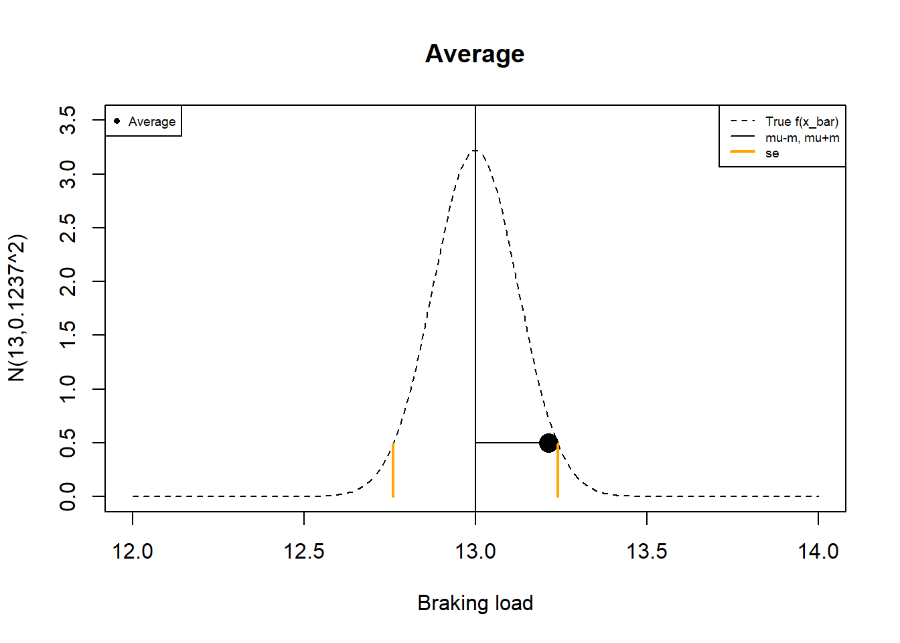
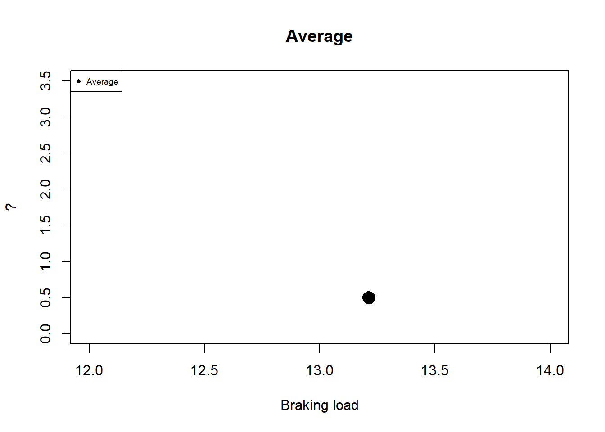
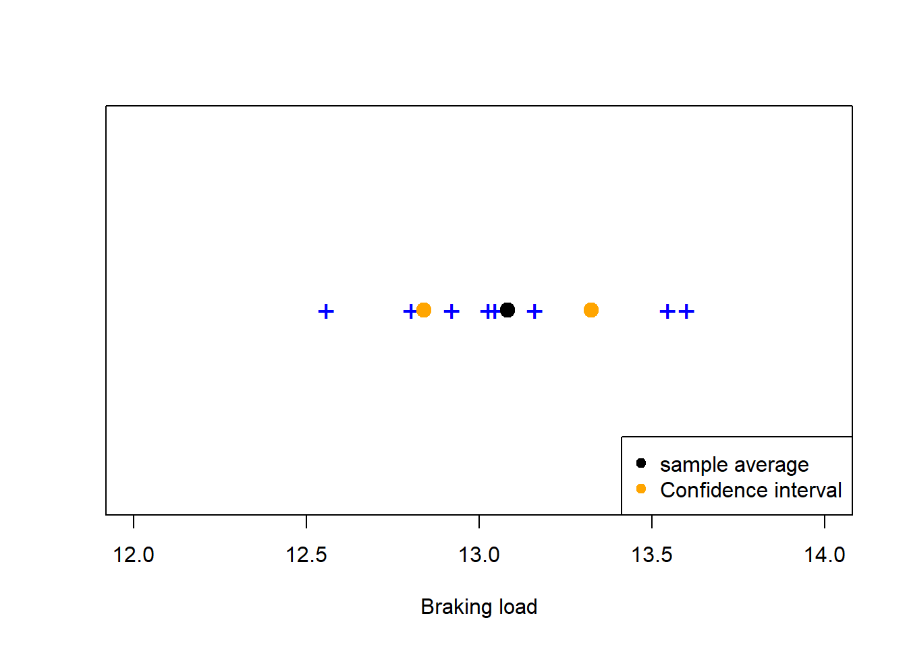
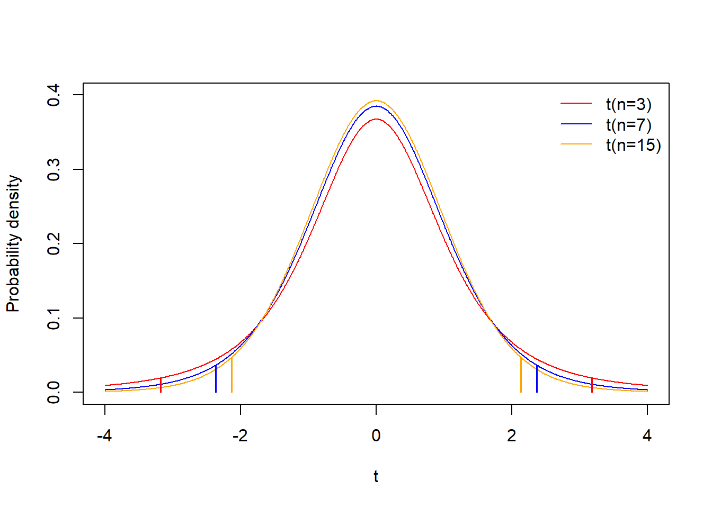
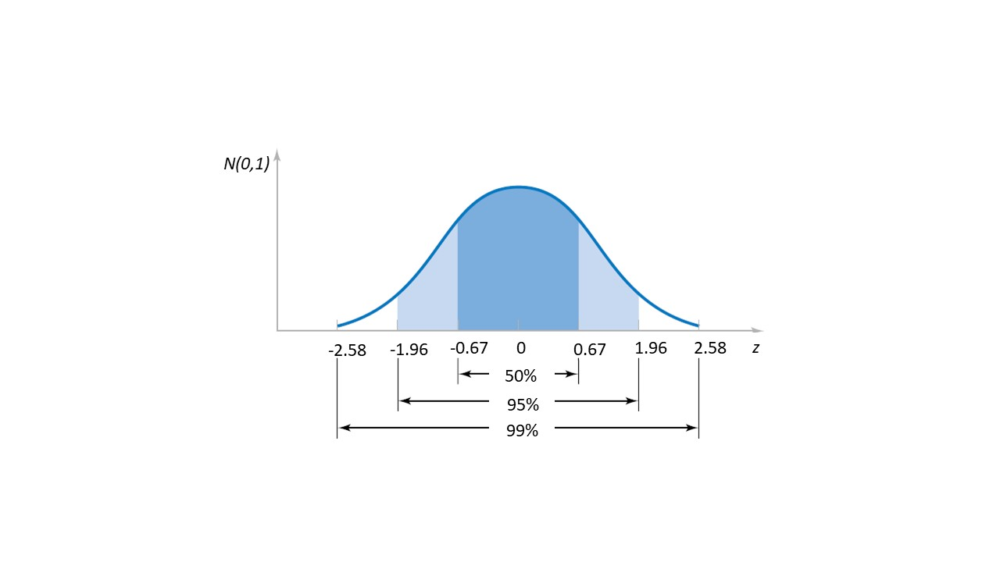
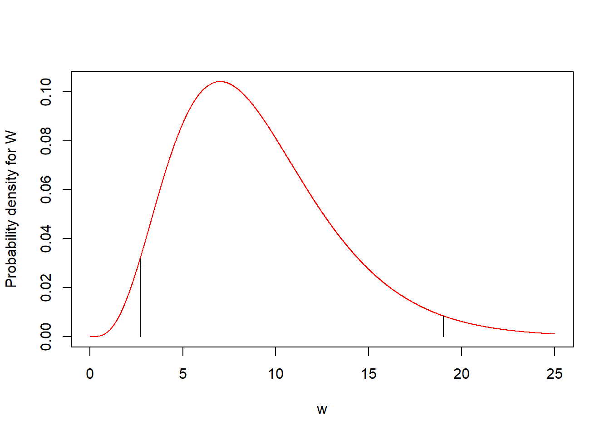
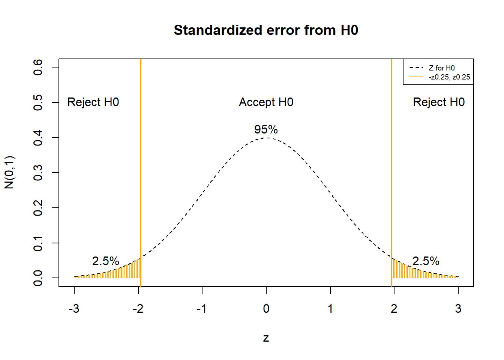

Chapter 13 Interval estimation
13.1 Objective
In this chapter, we will introduce the concept of confidence intervals for means, proportions and variances.
We will derive the formulas for the confidence intervals under different conditions, like normality with known and unknown variance, and large \(n\).
13.2 Estimation of the mean
We have seen that whenever we take a random sample \((X_1, X_2, ... X_n)\), the sample mean \[\bar{X}=\frac{1}{n}\sum_{i=1}^n X_i\]
is an estimator of the mean \(\mu\) of the random variable \(X\). The estimator is unbiased
- \(E(\bar{X})=\mu\)
and consistent
- \(V(\bar{X})=\frac{\sigma^2}{n}\)
where \(\sigma^2\) is the variance of \(X\). We call \(se=\frac{\sigma}{\sqrt{n}}\) the standard error
when we take the values of the random sample then we take the value of \(\bar{x}\) as the the value of the mean. That is
\[\bar{x}=\hat{\mu}\]
Since \(\bar{X}\) is a random variable the estimation of the mean changes when we take another sample.
13.3 Margin of error
When deciding whether the error in estimation \[\bar{X}-\mu\] is large or not we usually compare it with a predefined tolerance. If we know that the the distribution of \(X\) is normal \(X \rightarrow N(\mu, \sigma^2)\), we can compute how far the estimation of \(\bar{x}\) falls from \(\mu\).
We defined the margin of error at \(5\%\) level as the distance \(m\) such that distribution of \(\bar{X}\) captures \(95\%\) of the estimations:
\[P(-m \leq \bar{X}-\mu \leq m)=P(\mu-m \leq \bar{X} \leq\mu + m)=0.95\]
If \(\bar{X}\) is normally distributed then the marging of error is
\[m=z_{0.025} \frac{\sigma}{\sqrt{n}}=1.96\times se\]
where \(z_{0.025}=\phi^{-1}(0.975)=\) qnorm(0.975)
Example (cables):
We perform take a random sample of size \(8\): Load a cable until it breaks and record the breaking load.
If we know that our cables truly distribute as \[X \rightarrow N(\mu=13, \sigma^2=0.35^2)\] then
\[\bar{X} \rightarrow N(13, \frac{0.35^2}{8})\]
With mean \(E(\bar{X})=13\) and standard error \(se=\frac{0.35}{\sqrt{8}}=0.1237\)
Therefore the marging of error at \(95\%\) is
\[m=z_{0.025} \frac{\sigma}{\sqrt{n}}=1.96\times se=1.96\frac{0.35}{\sqrt{8}}=0.24\] Now, we take the random sample and find the results
## [1] 13.34642 13.32620 13.01459 13.10811 12.96999 13.55309 13.75557 12.62747The observed average is \(\bar{x}=13.21\), and the error we would make if we replaced \(\mu\) by \(\bar{x}\), would be
\[\bar{x}-\mu=13.21-13=0.21\] The observed error is within the margin of error
\[\bar{x}-\mu <m\] Replacing \(\mu\) by \(\bar{x}\) is called a point estimation of the parameter.


13.4 Interval estimation for the mean
The problem is that in real life we do not know the real values of \(\mu\) or \(\sigma\) for
\[X \rightarrow N(\mu, \sigma^2)\] We start by taking the sample

and then computing the mean

What is the value of \(\mu\)?
Our data suggest that it is \(\bar{x}=13.21\), but how confident are we? after all we know we are making a mistake but do not how big it is. Lets define the confidence interval for \(\mu\)
From the margin of error equation
\[P(-m \leq \bar{X} - \mu \leq m)=0.95\] let’s solve for \(\mu\) which is the real unknown
\[P(\bar{X} - m \leq \mu \leq \bar{X} + m)=0.95\]
The left and right limits of the inequality are random variables which motivate the definition for the random confidence interval at \(95\%\):
\[(L,U)=(\bar{X} - m,\bar{X} + m)\]
This interval is a new random variable and it has by definition a probability of \(0.95\) to contain \(\mu\).
The observed interval that we obtain from the experiment is (script size)
\[(l,u)=(\bar{x} - m,\bar{x} + m)\]
This interval either contains or does not the parameter \(\mu\): we will never know!
We say that we have a confidence of \(95\%\) that the interval \((l,u)\) will capture the true unknown parameter \(\mu\). Think of buying a lottery scratch ticket that we cannot scratch to see the prize. The ticket either has or has not the prize, only that we do not know which case it is.
13.4.1 Case 1 (known variance)
Confidence intervals can be estimated in different cases. The first case is when
- \(X\) is a normal variable
- and we know the value of \(\sigma\)
the confidence interval at \(95\%\) is
\[(l,u)=(\bar{x} - m, \bar{x} + m)\] where \[m=z_{0.025} \frac{\sigma}{\sqrt{n}}\]
That is:
\[(l,u)=(\bar{x} - z_{0.025} \frac{\sigma}{\sqrt{n}}, \bar{x} + z_{0.025} \frac{\sigma}{\sqrt{n}})\]
Example (cables):
In our example, we assume that \(X\) is normally distributed and that we know \(\sigma^2=0.35^2\).
- Since \(\bar{X}\) is normal, the margin of error is
\[m=z_{0.025} \frac{\sigma}{\sqrt{n}}\] 2. Since we know \(\sigma^2==0.35^2\), then the \(95\%\) confidence interval is
\((l,u)=(\bar{x} - m, \bar{x} + m)=\) \[(\bar{x}-z_{0.025} \frac{\sigma}{\sqrt{n}}, \bar{x}+z_{0.025} \frac{\sigma}{\sqrt{n}})= (12.97,13.45)\]
or we can also write it as
\[\hat{\mu}=\bar{x} \pm m = 13.21 \pm 0.24\] This means that, when estimating the mean by the average, we are confident about the units but not so much about the decimal places.

Remember that the confidence interval \((l,u)\) is an observation of the random confidence interval \((L,U)\). Therefore, every time that we obtain a new sample then \((l,u)\) change. If we perform \(100\) samples of size \(n\) then \(95%\) of the confidence intervals will contain \(\mu\), we jsut do not know which!

13.4.2 Confidence level
We can change our confidence from \(95\%\) to \(99\%\). When we computed the margin of error at \(95\%\), we left out \(\alpha=0.05\) probability, \(0.025\) on each side.
Now, we can leave out \(\alpha=0.01\) probability, \(0.005\) on each side. Therefore the \(99\%\) confidence interval is
\((l,u) = (\bar{x} - z_{0.005}\frac{\sigma}{\sqrt{n}},\bar{x} + z_{0.005}\frac{\sigma}{\sqrt{n}})\)
\[= (\bar{x} - 2.58\frac{\sigma}{\sqrt{n}},\bar{x} + 2.58\frac{\sigma}{\sqrt{n}})\]

where \(z_{0.005}=\phi^{-1}(0.995)=\) qnorm(0.995). We can also write it as
\[\hat{\mu}=\bar{x} \pm 2.58\frac{\sigma}{\sqrt{n}}\] For our cables, the \(99\%\) confidence interval is
\[\hat{\mu}= 13.21 \pm 0.31\]
If we want to be more confident then we need larger confidence intervals!
Example (Impact energy):
A metallic material is tested for impact to measure the energy required to cut it at a given temperature. Ten specimens of A238 steel were cut at 60ºC at the following impact energies (J):
\(64.1, 64.7, 64.5, 64.6, 64.5, 64.3, 64.6, 64.8, 64.2, 64.3\)
If we asume that the impact energy is normally distributed with \(\sigma=1J\) what is the \(95\%\) confidence interval for the mean of these data?
We know
- \(X \rightarrow N(\mu, \sigma^2)\)
- \(\sigma=1J\)
- \(\alpha=0.05\) (the confidence limit)
The \(95\%\) confidence interval is then
\((l,u)=(\bar{x}-1.96 \frac{\sigma}{\sqrt{n}}, \bar{x}+1.96 \frac{\sigma}{\sqrt{n}})\) \[=(64.46-1.96 \frac{1}{\sqrt{10}}, 64.46+1.96 \frac{1}{\sqrt{10}})=(63.84,65.08)\]
or
\[\hat{\mu}=64.46 \pm 0.61\]
this tells us that we can be sure on the first digit (6), somewhat confident on the second (4), and unsure on the decimals (46).
In R:
library(BSDA) ## Loading required package: lattice##
## Attaching package: 'BSDA'## The following object is masked from 'package:datasets':
##
## Orangez.test(c(64.1, 64.7, 64.5, 64.6, 64.5, 64.3, 64.6, 64.8, 64.2, 64.3),
sigma.x=1)##
## One-sample z-Test
##
## data: c(64.1, 64.7, 64.5, 64.6, 64.5, 64.3, 64.6, 64.8, 64.2, 64.3)
## z = 203.84, p-value < 2.2e-16
## alternative hypothesis: true mean is not equal to 0
## 95 percent confidence interval:
## 63.8402 65.0798
## sample estimates:
## mean of x
## 64.46What if \(\sigma^2\) is unknown?
13.5 Marging of error for unkown variance
We were able to compute the confidence interval \((l,u)=(\bar{x} -m, \bar{x} -m)\) because we were able to find the margin of error
\[m=1.96 \frac{\sigma}{\sqrt{n}}\] since we knew \(\sigma\). \(\sigma\) is a parameter of the distribution that we usually do not know, likewise \(\mu\). To find the margin of error with unknown variance, we need the following theorem, due to Gosset
13.5.1 Theorem (T-statistic)
When \(X\) is normal then the standardized statistic
\[T=\frac{\bar{X}-\mu}{\frac{S}{\sqrt{n}}}\] Follows a \(t\)-distribution with \(n-1\) degrees of freedom, where \(S^2=\frac{1}{n-1} \sum_{i=1}^n (X_i-\bar{X})^2\). We can therefore compute probabilities for \(\bar{X}\), even if we do not know \(\sigma\).
Let’s look at some probability densities in the family of the \(T\) distributions.

Now we need to recompute the the margin of error \(m\) at \(5\%\) level when We use the \(t\)-distribution
\(P(\mu-m \leq \bar{X} \leq\mu + m)\) \[=P(-\frac{m}{s/\sqrt{n}} \leq T \leq\frac{m}{s/\sqrt{n}})=0.95\]
\[m=t_{0.025, n-1} \frac{s}{\sqrt{n}}\] where \(t_{0.025, n-1}\) is the value \(T\) that leaves \(2.5\%\) of probability at the right hand side of the \(t\)-distribution with \(n-1\) degrees of freedom.
13.5.2 Case 2 (unknown variance)
The second case to compute confidence intervals is more realistic. If
- \(X\) is a normal variable
the confidence interval at \(95\%\) is
\[(l,u)=(\bar{x} - m, \bar{x} + m)\] where \[m=t_{0.025, n-1} \frac{s}{\sqrt{n}}\]
That is:
\[(l,u)=(\bar{x} - t_{0.025, n-1} \frac{s}{\sqrt{n}}, \bar{x} + t_{0.025, n-1} \frac{s}{\sqrt{n}})\]
where \(t_{0.025, n-1}=F^{-1}(0.975)\)=qt(0.975, n-1)
Example (Impact energy):
A metallic material is tested for impact to measure the energy required to cut it at a given temperature. Ten specimens of A238 steel were cut at 60ºC at the following impact energies (J):
\(64.1, 64.7, 64.5, 64.6, 64.5, 64.3, 64.6, 64.8, 64.2, 64.3\)
If we asumme that the impact energy is normally distributed but we do not know the variance, what is the \(95\%\) confidence interval for the mean of these data?
We know
- \(\bar{x}=64.46\)
- \(s=0.227\)
- \(\alpha=0.05\)
- \(t_{0.025,9}=2.26\) obtained from \(t_{0.025,9}=\)
qt(0.975, 9)
The confidence interval is then
\((l,u)=(\bar{x}- t_{0.025,9}\frac{s}{\sqrt{n}},\bar{x}+t_{0.025,9} \frac{s}{\sqrt{n}})\)
\[=(64.46-2.26 \frac{0.227}{\sqrt{10}},64.46+2.26 \frac{0.227}{\sqrt{10}})\] \[=(64.29,64.62)\]
Note that when we assumed \(\sigma=1\) the confidence interval \((63.84,65.08)\) was larger. Data therefore suggests that \(\sigma<1\).
In R, we can compute the confidence interval with:
t.test(c(64.1,64.7,64.5,64.6,64.5,64.3,64.6,64.8,64.2,64.3))##
## One Sample t-test
##
## data: c(64.1, 64.7, 64.5, 64.6, 64.5, 64.3, 64.6, 64.8, 64.2, 64.3)
## t = 897.74, df = 9, p-value < 2.2e-16
## alternative hypothesis: true mean is not equal to 0
## 95 percent confidence interval:
## 64.29757 64.62243
## sample estimates:
## mean of x
## 64.4613.6 Estimation of proportions
Example (vaccine):
A random sample of \(400\) patients was selected for testing a new vaccine for the influenza virus, after \(6\) months of vaccination \(134\) were ill. What is the expected efficacy of the vaccine?
Since each vaccination \(X_i\) is Bernoulli trial
\[X \rightarrow Bernoulli(p)\] With mean \(\mu=p\) and variance \(\sigma^2=p(1-p)\).
The sample is something like \[(x_1,x_2, x_3, ...x_n)=(0,1,0,.. 1, 0)_{400}\] with \(136\) ones and in a total of \(400\) repetitions. The sample has a an average \(\bar{x}=\frac{1}{400}\sum_i^{400} x_i=134/400=0.34\). Since the sample mean is an unbiased estimator of \(\mu\), then we can have a point estimate for \(p\)
\[\hat{p}=\bar{x}=134/400=0.34\]
This makes sense because \(\bar{x}\) is the observed relative frequency of ones \(f_1\) in the sample. And as such it is an estimator of the probability of observing a one in a Bernoulli trial
\[f_1 =\hat{P}(X=1)\] This is is consistent with frequentist definition of probability that we saw in chapter 2. But how confident are we about this estimation? We want a confidence interval for \(p\)
13.6.1 Case 3 (proportions)
- When \(\hat{p}n>5\) and \((\hat{p}-1)n>5\), the standardized statistic of \(\bar{X}\) can be approximated by a standard distribution (CLT)
\[Z=\frac{\bar{X}-\mu}{\sigma/\sqrt{n}}= \frac{\bar{X}-p}{\big[\frac{p(1-p)}{n} \big]^{1/2}}\rightarrow N(0,1)\] and the \(95\%\) CI interval of \(p\) is:
\[CI=(l,u)=(\bar{x}-z_{0.025}\big[\frac{\bar{x}(1-\bar{x})}{n} \big]^{1/2}, \bar{x}+z_{0.025}\big[\frac{\bar{x}(1-\bar{x})}{n} \big]^{1/2})\] Where we estimate the Bernoulli variance \(\sigma=p(1-p)\) by \(\hat{\sigma}=\bar{x}(1-\bar{x})\). That is \(\hat{\sigma}=\sqrt{\bar{x}(1-\bar{x})}\).
Example (vaccine):
In our case, we are counting failures on vaccinations \(134\) in \(400\) trials.
we know
- \(\bar{x}=134/400=0.34\)
- \(z_{0.025}=1.96\)
Therefore the \(95\%\) confidence interval for \(p\) is
\((l,u)=(\bar{x}-1.96 \big[\frac{\bar{x}(1-\bar{x})}{n} \big]^{1/2}, \bar{x}+1.96 \big[\frac{\bar{x}(1-\bar{x})}{n} \big]^{1/2})\)
\[=(0.29,0.38)\]
The probability of failure of the vaccine is
\[\hat{p}=0.34 \pm 0.05\]
Note: Voting intention surveys (Bernoulli test) in a sample of \(n\) individuals report this type of estimation with its margin of error. It does not mean that the true value of \(p\) falls within this interval with probability \(95\%\). It means that we are \(95\%\) confident that we have caught the \(p\) that this particular sample represents.
prop.test(134, 400, correct=FALSE)##
## 1-sample proportions test without continuity correction
##
## data: 134 out of 400, null probability 0.5
## X-squared = 43.56, df = 1, p-value = 4.112e-11
## alternative hypothesis: true p is not equal to 0.5
## 95 percent confidence interval:
## 0.2905091 0.3826300
## sample estimates:
## p
## 0.33513.7 Estimation of the variance
We have seen that whenever we take a random sample \((X_1, X_2, ... X_n)\), the sample variance \[S^2=\frac{1}{n-1}\sum_{i=1}^n (X_i-\bar{X})^2\] is an estimator of the mean \(\sigma^2\) of the random variable \(X\). The estimator is unbiased
- \(E(S^2)=\sigma\)
and it is also consistent. When we take the values of the random sample, then we take the value of \(S^2\) as the the value of the variance; that is
\[s^2=\hat{\sigma}^2\]
Since \(S^2\) is a random variable the estimation of the variance changes when we take another sample.
Example (impact energy)
A metallic material is tested for impact to measure the energy required to cut it at a given temperature. Ten specimens of A238 steel were cut at 60ºC at the following impact energies (J):
\(64.1, 64.7, 64.5, 64.6, 64.5, 64.3, 64.6, 64.8, 64.2, 64.3\)
what is estimation of the variance of these data?
\[s^2=0.05155556\]
In R: sd(c(64.1, 64.7, 64.5, 64.6, 64.5, 64.3, 64.6, 64.8, 64.2, 64.3))^2
How confident are we on the decimals of the estimation?
13.8 Confidence interval for the variance
To compute a confidence interval of for the variance, we need a statistics that is a function of \(S^2\) and allows us to compute probabilities. We will use the following theorem
13.8.1 Theorem (\(\chi^2\)):
When \(X\) is normal then the standardized statistic
\[W=\frac{S^2(n-1)}{\sigma^2}\] follows a \(\chi^2\) distribution with \(n-1\) degrees of freedom
\[\frac{S^2}{\sigma^2}(n-1)\rightarrow \chi^2_{n-1}\]
We can therefore compute probabilities for \(W\).
Let’s look at some probability densities in the family of the \(\chi^2\) distriutions.

13.8.2 Confidence interval for the variance
We look for confidence interval of \(\sigma^2\) at confidence \(95\%\) \((L,U)\) such that \[P(L \leq \sigma^2 \leq U)=0.95\]
We can then use the \(\chi^2\) to determine the \(95\%\) of the distribution about \(W\). Lets start by defining the values that capture the \(95\%\) of the distribution
\[P(\chi^2_{0.975,n-1} \leq W \leq \chi^2_{0.025,n-1})=0.95\] Replacing the value of \(W\)
\[P(\chi^2_{0.975,n-1} \leq \frac{S^2}{\sigma^2}(n-1) \leq \chi^2_{0.025,n-1})=0.95\]
and solving for \(\sigma^2\)
\[P(\frac{S^2 (n-1)}{\chi^2_{0.025,n-1}}\leq \sigma^2 \leq \frac{S^2(n-1)}{\chi^2_{0.975,n-1}})=0.95\]
We find a random interval that captures \(\sigma^2\) with \(95\%\) confidence
\[(L,U) = (\frac{S^2 (n-1)}{\chi^2_{0.025,n-1}},\frac{S^2(n-1)}{\chi^2_{0.975,n-1}})\]
13.8.3 Case 4 (variance)
- When \(X\) is a normal variable
The observed \(95\%\) confidence interval (script size) is
\[(l,u) = (\frac{s^2 (n-1)}{\chi^2_{0.025,n-1}},\frac{s^2(n-1)}{\chi^2_{0.975,n-1}})\]
where
\(\chi^2_{0.975,n-1}=F^{-1}(0.025)=\)
qchisq(0.025, df=n-1)\(\chi^2_{0.025,n-1}=F^{-1}(0.975)=\)
qchisq(0.975, df=n-1)for \(n=10\) or \(df=n-1=9\)
Example (impact energy)
A metallic material is tested for impact to measure the energy required to cut it at a given temperature. Ten specimens of A238 steel were cut at 60ºC at the following impact energies (J):
\(64.1, 64.7, 64.5, 64.6, 64.5, 64.3, 64.6, 64.8, 64.2, 64.3\)
what is confidence interval for the variance of these data?
\[(l,u) = (\frac{s^2 (n-1)}{\chi^2_{0.025,n-1}},\frac{s^2(n-1)}{\chi^2_{0.975,n-1}})\]
The standard deviation of the data is \(s^2=0.05155556\)
\(n=10\)
We then compute \(\chi^2_{0.025,n-1}\) and \(\chi^2_{0.975,n-1}\)
chi0.975 <- qchisq(0.025, df=9)
chi0.975[1] 2.700389chi0.025 <- qchisq(0.975, df=9)
chi0.025[1] 19.02277
Therefore
\[(l,u)= (\frac{0.227^2 (10-1)}{19.02277},\frac{0.227^2(10-1)}{2.700389})=(0.02,0.17)\] Note that when we computed the confidence interval for the mean and assumed \(\sigma^2=1\) (case 1), this was not consistent with the data because the confidence interval does not contain the value \(\sigma^2=1\). According to the data \(\sigma^2 \neq 1\) at \(95\%\) confidence.
in R:
library(Ecfun)
confint.var(0.05155556, 9)## lower upper
## [1,] 0.02439183 0.1718271
## attr(,"level")
## [1] 0.95The interval for the variance is not symmetric and we cannot formulate it as an estimate \(\pm\) margin of error.

13.9 Questions
1) The margin of error at \(95\%\) confidence of a normal variable is
\(\qquad\)a: \(\frac{s}{\sqrt{n}}\); \(\qquad\)b: \(1.96\times se\); \(\qquad\)c: \(\frac{\sigma}{\sqrt{n}}\); \(\qquad\)d: \(\sigma\)
2) when we talk about \(z_{0.025}\) we mean:
\(\qquad\)a: The value of a normal standard variable that has accumulates up to \(75\%\) of probability; \(\qquad\)b: The value of a normal standard variable that has accumulates up to \(25\%\) of probability; \(\qquad\)c: The probability of standard variable up to \(75\%\); \(\qquad\)d: The probability of standard variable up to \(25\%\)
3) The random confident interval \((L,U)\) for the mean at \(95\%\)
\(\qquad\)a: is a two dimensional parameter of the sample distribution; \(\qquad\)b: gives the limits where \(\mu\) has a probability of occurring \(95\%\) of the times; \(\qquad\)c: is an estimate of the mean; \(\qquad\)d: captures \(\mu\) \(95\%\) of the times
4) A confidence interval for the mean written as \(\hat{\mu}=56.99 \pm 0.01\)
\(\qquad\)a: indicates that we are \(\%99\) confident that the mean is \(56.99\); \(\qquad\)b: indicates that we cannot trust the last decimal place on the estimation of the mean; \(\qquad\)c: indicates that the mean of the population is at \(56.99\) with error \(0.01\); \(\qquad\)d: indicates that we can trust the unit figure (\(6\)) on the estimation of the mean
5)If we know the value of \(\mu\) and find that the confidence interval did not catch it then
\(\qquad\)a: the confidence interval is not well computed; \(\qquad\)b: it is a rare observation of the confidence interval; \(\qquad\)c: the confidence interval does not estimate the mean; \(\qquad\)f: there is little probability of finding the mean in the confidence interval
13.10 Exercises
13.10.0.1 Exercise 1
In a scientific paper, the authors report a \(95\%\) confidence interval of \((228, 232)\) for the natural frequency (Hz) of a metallic beam. They used a sample of size \(25\) and considered that the measurements were distributed normally.
What is the mean and the standard deviation of the measurements?
Compute the \(99\%\) confidence interval.
hints:
in R \(t_{0.025, 24}=\)
qt(0.975, 24)\(\sim 2\)in R \(t_{0.005, 24}=\)
qt(0.995, 24)\(\sim 2.8\)
13.10.0.2 Exercise 2
compute \(95\%\) CI the mean of a normal variable with known variance \(\sigma^2=9\) and \(\bar{x}=22\), using a sample of size \(36\).
13.10.0.3 Exercise 3
This year, \(17\) of \(1000\) of patients with influenza developed complications.
Compute the \(99\%\) confidence interval for the proportion of complications.
The previous year \(2\%\) showed complications. Can we say with \(99\%\) confidence that this year there is a significant drop in influenza complications?
13.11 Practice
Load misophonia data data_0.txt
Compute the confidence interval for the mean of the cephalometric measures. (“Angulo_convexidad,” “protusion.mandibular,” “Angulo_cuelloYtercio,” “Subnasal_H”)
Compute the confidence interval for the proportion of misophonic (“Misofonia.dic”), and depression (“depresion.dic”).
Compute the confidence interval for the variance of the age (“Edad”). What is the cofidence interval for the standard deviation of the population?